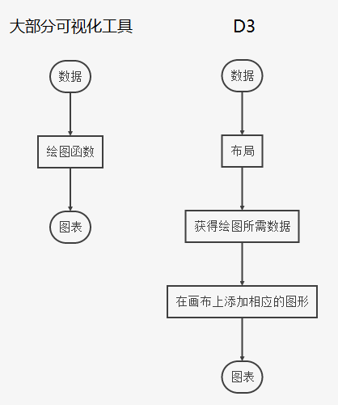

D3入门教程
D3.js（D3或Data-Driven Documents）是一个使用动态图形进行数据可视化的JavaScript程序库。与W3C标准兼容，并且利用广泛实现的SVG、JavaScript和CSS标准，改良自早期的Protovis程序库。与其他的程序库相比，D3对视图结果有很大的可控性。D3是2011年面世的，同年的8月发布了2.0.0版。到2018年4月，D3已被更新到了5.5.0版。
D3.js已被数十万个网站使用，最常被运用在在线新闻网站呈现交互式图形、呈现数据数据的图表和呈现含有地理信息的数据。另外SVG的输出功能也使得D3.js能用于印刷出版物的绘制上。
技术原理
D3.js透过预先创建好迁入于网页中的JavaScript函数来选择网页元素、创建SVG元素、调整CSS来呈现数据，并且也可以设置动画、动态改变对象状态或加入工具提示来完成用户交互功能。使用简单的D3.js函数就能够将大型的数据数据结构与SVG对象进行绑定，并且能生成格式化文本和各种图表。其数据数据结构的格式可以是JSON、CSV（以逗号分隔的数据）或GeoJSON，也可以透过自己写JavaScript函数来读取其他或自定义格式的数据，例如Shapefile。
开发工具
- rimraf
Node下的Unix命令 rm -rf。
- json2module
将一个JSON对象转换成ES6模块。
- Rollup
Rollup 是一个 JavaScript 模块打包器，可以将小块代码编译成大块复杂的代码，例如 library 或应用程序。Rollup 对代码模块使用新的标准化格式，这些标准都包含在 JavaScript 的 ES6 版本中，而不是以前的特殊解决方案，如 CommonJS 和 AMD。ES6 模块可以使你自由、无缝地使用你最喜爱的 library 中那些最有用独立函数，而你的项目不必携带其他未使用的代码。ES6 模块最终还是要由浏览器原生实现，但当前 Rollup 可以使你提前体验。
- tape
用于nodejs和浏览器的测试工具。
工程模板
典型代码
当有数据而没有足够图形元素的时候，使用此方法可以添加足够的元素。
1 | svg.selectAll("rect") //选择svg内所有的矩形 |
当数组的长度与元素数量不一致（数组长度 > 元素数量 or 数组长度 < 元素数量）时呢？这时候就需要理解 Update、Enter、Exit 的概念。
如果数组为 [3, 6, 9, 12, 15]，将此数组绑定到三个 p 元素的选择集上。可以想象，会有两个数据没有元素与之对应，这时候 D3 会建立两个空的元素与数据对应，这一部分就称为 Enter。而有元素与数据对应的部分称为 Update。如果数组为 [3]，则会有两个元素没有数据绑定，那么没有数据绑定的部分被称为 Exit。
绘图流程

参考链接
- Data-Driven Documents,by d3js.
- D3.js,by wikipedia.
- rimraf,by isaacs.
- json2module,by mbostock.
- Rollup,by rollup.
- tape,by substack.
- npm scripts 使用指南,by ruanyifeng.
- Webpack vs Rollup,by 余伯贤.
- npm运行项目报错—-Cannot find module ‘@babel/compat-data/corejs3-shipped-proposals’,by 吴小明.
- npm install 命令参数的一些简写方式,by 刘予川.
- Object.assign(),by mozilla.
- 第十章 理解 Update、Enter、Exit,by 馒头华华.
- SVG 图像入门教程,by ruanyifeng.
- JavaScript视口宽高、元素位置、滚动高度、尺寸属性,by 侠客有情剑无情QAQ.
- 【d3.js-03】shape-饼图,by PolarD.
- 二叉树遍历（前序、中序、后序、层次遍历、深度优先、广度优先）,by zydoer.
- D3中常用的比例尺,by 江南陈酒.
- Flex 布局教程：语法篇,by ruanyifeng.
- 浅谈JavaScript获取元素的大小（高度和宽度）的方法,by html.
- mouseout、mouseover和mouseleave、mouseenter区别,by 海角在眼前.
- Building tooltips with d3.js,by d3-graph.
- 区分event对象中的[clientX,offsetX,screenX,pageX],by Rin阳.
- position:absolute相对哪个元素定位,by weiqing687.